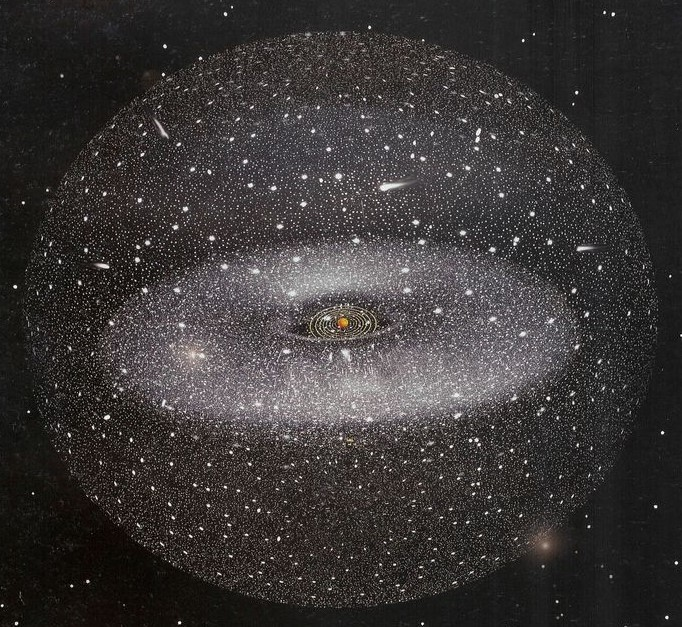

La Nube de Oort
Los objetos más misteriosos del Universo no siempre están a distancias tan enormes como a decenas de años luz o incluso en otras galaxias, sino que pueden estar en nuestra propia "vecindad", tal es el caso de la llamada Nube de Oort, una nube esférica de objetos transneptunianos que se encuentra en los límites del Sistema Solar.
Nuestro Sistema Solar, además del Sol, los planetas y sus lunas, está conformado por miles de millones de rocas conocidas como "asteroides", éstos asteroides están repartidos en cuatro regiones principales conocidas como: el Cinturón de Asteroides, el Cinturón de Kuiper, el Disco Disperso y la hipotética Nube de Oort, a continuación veremos a detalle cada uno.
1. Cinturón de Asteroides
Seguramente ya habías escuchado sobre el Cinturón de Asteroides, y por lo tanto sabrás que es un anillo de rocas de diferentes tamaños que orbita alrededor del Sol entre las orbitas de los planetas Marte y Júpiter, la masa de este grupo de asteroides en conjunto es apenas un 4% de la masa lunar, es decir, es imperceptible, ya que incluso su objeto de mayor tamaño apenas mide unos 950 km de diámetro y de hecho tiene nombre, este objeto se llama Ceres, a pesar de su tamaño es considerado un "planeta" pero de los clasificados como planetas enanos, de los cuales existen cinco, los otros son Eris, Haumea, Makemake y Plutón.
¿Por qué se les llama Planetas Enanos?
En 2006 tras el reciente descubrimiento de Eris un año atrás, la Unión Astronómica Internacional (UAI) decidió crear una nueva categoría de cuerpos celestes en la que entrarían éstos objetos y dada la nueva definición de planeta, Plutón sería descatalogado como tal, reduciendo el número de planetas del Sistema Solar de 9 a 8.
Entonces, ¿Qué es un planeta?
Según la UAI la nueva definición de planeta dicta que, para que un cuerpo celeste sea considerado como tal debe cumplir con tres reglas, estas son:
- Debe orbitar el Sol.
- Debe ser lo suficientemente masivo para alcanzar el equilibrio hidrostático y adquirir una forma esférica.
- Debe haber limpiado su órbita de otros objetos menores, es decir, no compartir su órbita con otros objetos.
- Ceres del Cinturón de Asteroides
- Plutón, Makemake y Haumea del Cinturón de Kuiper
- Eris del Disco Disperso
2. Cinturón de Kuiper
La segunda región de asteroides del Sistema Solar es el Cinturón de Kuiper, este cinturon de asteroides se encuentra más lejano y es mucho más amplio y masivo que el anterior ya que se localiza más allá de Neptuno a unas 30 Unidades Astronómicas (UA) y se extiende hasta las casi 50 UA del Sol, es decir, es enorme y su masa supera entre 20 y 200 veces la del Cinturón de Asteroides.
Se compone principalmente por cuerpos pequeños y rocas remanentes que datan de la formación del Sistema Solar, rocas que en su mayoría están compuestas de elementos volátiles congelados como metano, amoniaco y agua, y como se mencionó antes, además de pequeños asteroides, el Cinturón de Kuiper alberga tres de los planetas enanos: Plutón, Haumea y Makemake, siento estos sus objetos más grandes.
Fuente de Cometas
A diferencia del Cinturón de Asteroides ubicado entre Marte y Júpiter, el Cinturón de Kuiper cuenta con objetos de considerable tamaño pues se cree que existen al menos unos 100,000 cuerpos de aproximadamente 100 km de diámetro, es decir, bastante grandes, por lo que se llegó a pensar que éste cinturón era la fuente de los cometas periódicos de órbitas menores a los 200 años, sin embargo investigaciones posteriores demostraron que el cinturón es bastante estable y pocos objetos escapan de él, apuntando a que el verdadero origen de los cometas es el llamado Disco Disperso, una región de asteroides que se solapa con el propio Cinturón de Kuiper en sus límites exteriores, como si ambos formaran parte de un mismo disco, sin embargo los objetos del Disco Disperso tienen órbitas tan excéntricas que los alejan hasta las 100 UA del Sol, es decir, mucho más allá de los límites del propio Cinturón de Kuiper.
A los cuerpos pertenecientes Cinturón de Kuiper también se les conoce como objetos transneptunianos y no solo a estos sino a los que forman parte del Disco Disperso y de la Nube de Oort. Un objeto transneptuniano no es más que cualquier objeto cuya órbita se ubica más allá de Neptuno, es decir, estos objetos son los cuerpos más lejanos que alberga nuestro Sistema Solar.
3. Disco Disperso
Un poco más allá del Cinturón de Kuiper se encuentra el llamado Disco Disperso una enorme masa de asteroides que en su parte más interna, a unas 30 UA del Sol, se entrelaza con los límites exteriores del Cinturón de Kuiper haciendo que ambos conjuntos de objetos parezcan formar el mismo.
El Disco Disperso está conformado por cuerpos helados compuestos por roca, metal y hielo, algunos de ellos son tan grandes que superan por mucho a los objetos del Cinturón de Kuiper, alcanzando tamaños de hasta 1000 km de diámetro, siendo su miembro más grande el planeta enano Eris el cual tiene un diámetro de unos 2,600 km, es decir, prácticamente del mismo tamaño que Plutón, con la diferencia de que Eris tiene una masa 27% superior
Una de las características que diferencia al Disco Disperso de los cinturondes de Asteroides y Kuiper, es que mientras los objetos de éstos dos últimos se encuentran en órbitas relativamente planas, los objetos del disco disperso, como su nombre lo indica, se encuentran dispersos en órbitas heterogéneas e inestables, adquidas probablemente por la interacción gravitatoria de los planetas exteriores del Sistema Solar, principalmente Neptuno, lo que ha hecho que sus órbitas se hayan vuelto tan excéntricas que se siguen moviendo hacía el exterior y probablemente terminen formando parte de la Nube de Oort o quizás escapen al espacio interestelar.
4. Nube de Oort
Luego de hablar de los principales cinturones de asteroides que conforman el Sistema Solar, llegamos al más misterioso de todos, la denominada Nube de Oort
Si el Disco Disperso ya es extraño por como sus objetos se encuentran dispersos sobre el plano de la eclítica, la Nube de Oort es todavía más extraña.

La Nube de Oort, a diferencia del Cinturón de Asteroides, el Cinturón de Kuiper y el Disco Disperso, no es un disco plano de rocas sino que más bien es como una "nube" que rodea a todo el Sistema Solar, es decir, esta nube es esférica, se encuentra en todas direcciones y está tan lejana que marca los límites del Sistema Solar con el espacio sideral. Se cree que esta nube está tan distante, que se sitúa unas 100 veces más lejos del Sol que el propio Disco Disperso y es tan grande que podría contener hasta cien billones de objetos cuya masa equivaldría a unas cinco veces la masa de nuestro planeta.
Se cree que los objetos de la Nube de Oort se formaron en el Sistema Solar Interior y que una vez formados fueron expulsados por la interacción gravitatoria con los planetas gigantes Júpiter, Saturno, Urano y Neptuno. Aunque algunos de estos objetos terminan regresando al Sistema Solar Interior en órbitas tan excéntricas que se les conoce como cometas de perdiodo largo, se cree que el propio cometa Halley proviene de esta nube, siendo ésta misma la verdadera fuente de los cometas de periodos largos, mientras que el Disco Disperso es la fuente de los de periodos cortos.
Existencia Hipotética
Aunque se habla mucho de esta nube, su existencia podría decirse que aún es hipotética puesto que no ha sido obervada directamente por varios factores, por ejemplo, sus objetos son muy pequeños comparados con un planeta, se encuentran extremadamente lejanos y además la luz que reciben del Sol es mínima por lo que es difícil verlos y solo se tiene evidencia de cinco posibles miembros:
- Sedna
- 2000 CR
- 2006 SQ
- 2008 KV
Siendo todos estos parte de la Nube de Oort Interior, ya que esta se divide precisamente en Interior y Exterior.
Nube de Oort Interior y Exterior
La Nube de Oort Interior también llamada Nube de Hills, se extiende desde las 2,000 UA hasta las 20,000 UA del Sol, es decir, siendo esta su parte más cercana al Sol, al mismo tiempo se encuentra extremadamente distante, ni siquiera la parte más externa del Disco Disperso está tan lejana, es decir, hay una enorme distancia entre el Disco Disperso y la Nube de Oort Interior.
Por otra parte, la Nube de Oort Exterior se extiende desde las 20,000 UA hasta las 50,000 UA del Sol, y algunas fuentes calculan su límite hasta las 200,000 UA, eso signica que la nube podría extenderse a más de un año luz del Sol, distancia a la que la gravedad del Sol es casi nula, por ello se dice que la Nube de Oort marca los límites de nuestro Sistema Solar, cruzando esta nube nos encontraríamos en el espacio interestelar.
Es tan amplia la distancia a la que se encuentra esta nube del Sol, que a pesar de que está conformada por millones de objetos estos se localizan muy separados entre si, encontrándose cada uno de ellos a varias decenas de millones de kilómetros respecto al más cercano.
Forma Esférica
Así como la gravedad de la Luna provoca las mareas en la Tierra, la Nube de Oort sufre éste mismo efecto provocado por la propia Vía Láctea, haciendo que la nube no sea una esfera perfecta, sino que se vea ligeramente deformada hacia el centro de la galaxia, en la nube interior este efecto es mínimo ya que la gravedad del Sol supera a la de la galaxia, pero en la nube exterior la gravedad del Sol es casi nula y predomina la gravedad del centro galáctico.
Resumen
En la Tierra...